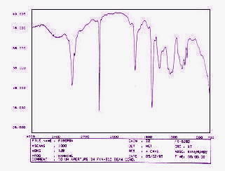

FTIR
Spectroscopy
FTIR (Fourier Transform Infrared) Spectroscopy,
or simply FTIR Analysis, is a failure analysis technique that provides information about the chemical bonding or molecular structure of materials, whether organic or inorganic. It is used in failure analysis to identify unknown materials present in a specimen, and is usually conducted to complement EDX analysis.
The technique
works on the fact that
bonds
and groups of bonds
vibrate
at
characteristic
frequencies.
A molecule that is exposed to infrared rays absorbs infrared energy at
frequencies which are characteristic to that molecule. During FTIR
analysis, a spot on the specimen is subjected to a modulated IR beam. The specimen's
transmittance and
reflectance of the
infrared rays at different frequencies is translated into an
IR absorption plot consisting of reverse peaks. The resulting FTIR
spectral pattern is then analyzed and matched with known signatures of
identified materials in the FTIR library.
|
|
|
Figure 1.
Example of an FTIR spectrometer from Perkin
Elmer |
Unlike SEM inspection or EDX analysis, FTIR spectroscopy does not require a vacuum, since neither oxygen nor nitrogen absorb infrared rays. FTIR analysis can be applied to minute quantities of materials, whether solid, liquid , or gaseous. When the library of FTIR spectral patterns does not provide an acceptable match, individual peaks in the FTIR plot may be used to yield partial information about the
specimen.
Single fibers or particles are
sufficient enough for material identification through FTIR analysis.
Organic contaminants in solvents may also be analyzed by first separating
the mixture into its components by gas chromatography, and then analyzing
each component by FTIR.
|
 |
|
Figure 2.
A Scan of an FTIR Spectrum Plot |